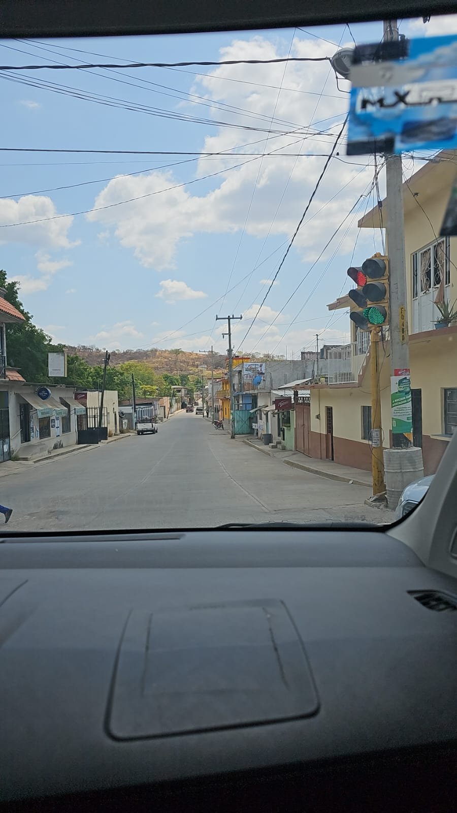

Luis Miguel
los jirasoles en peligro de extencion esas partes del jirason son las pártes mas hermosas
A pesar de solo grabar música en español, Luis Miguel siguió siendo el artista latino con mayores ventas en la década de 1990, y se le atribuye la popularización del género del bolero en el mercado principal. Ha vendido alrededor de 60 millones de discos en todo el mundo, lo que lo convierte en uno de los los artistas de música latina más vendidos.
Luis Miguel también es conocido por sus presentaciones en vivo de gran recaudación. Es el artista de gira latino con mayor recaudación desde que Boxscore comenzó a rastrear datos de giras en 1990, con un impresionante total de $278.5 millones. Con la Gira Luis Miguel, que se llevó a cabo en 2010, visitó 22 países de Norteamérica, Sudamérica y Europa, donde se presentó en un lapso de tres años con un total de 223 eventos en todo el mundo, convirtiéndose en la gira más larga y taquillera jamás realizada por un artista latino